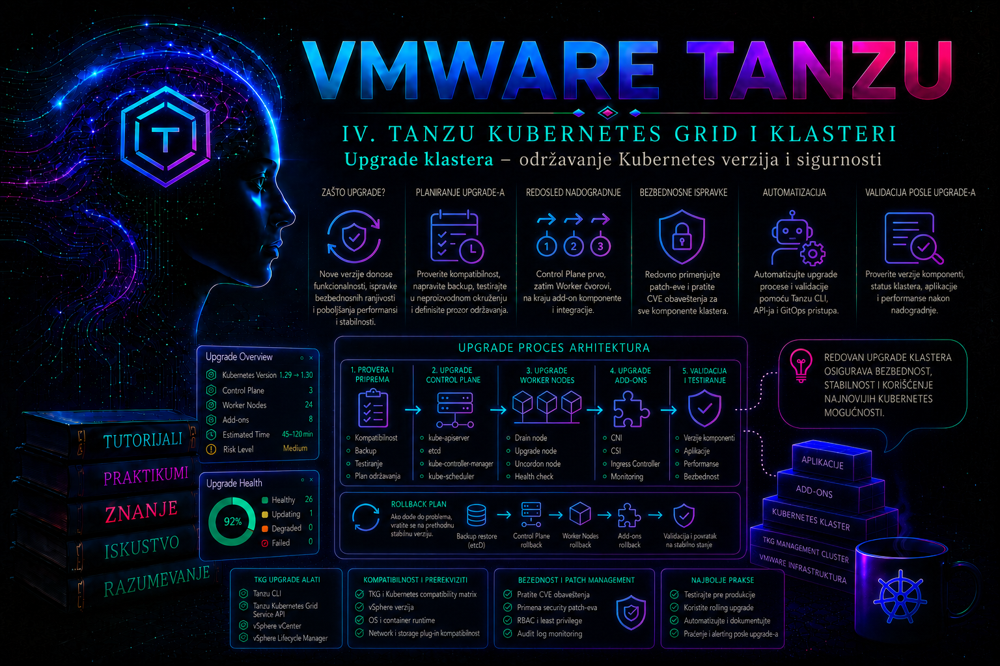

VMware & Tanzu

Upgrade Kubernetes klastera nije obična zamena verzije softvera, već kontrolisana promena čitavog skupa međuzavisnih komponenti: Kubernetes kontrolne ravni, kubelet procesa na čvorovima, operativnog sistema i VM image-a, mrežnog dodatka, skladišnih drajvera, sistemskih paketa i VKS kontrolera koji upravljaju životnim ciklusom klastera. U vSphere Supervisor okruženju administrator zato ne nadograđuje pojedinačne čvorove ručnim instaliranjem paketa, već menja deklarisano željeno stanje VKS Cluster objekta. Cluster API i vSphere Kubernetes Service zatim postepeno zamenjuju postojeće virtuelne mašine novim čvorovima zasnovanim na podržanom VMware Kubernetes Release-u (VKr; u starijoj dokumentaciji Tanzu Kubernetes Release, TKr).
Dobro izveden upgrade produžava podržani životni ciklus platforme, uklanja poznate ranjivosti, donosi ispravke stabilnosti i održava kompatibilnost sa infrastrukturom i aplikacijama. Loše pripremljen upgrade može zaustaviti aplikacije zbog neispravnih PodDisruptionBudget pravila, nedovoljnog kapaciteta, nedostupnog registra image-a, nepodržanog preskakanja Kubernetes verzija ili nekompatibilnog CSI, CNI ili ingress dodatka. Zbog toga je osnovni administratorski zadatak da pre promene utvrdi ne samo da li je nova verzija dostupna, već i da li je ceo sistem sposoban da bezbedno podnese postepenu zamenu čvorova.
Uklanjanje klastera je druga, nepovratna lifecycle operacija. Brisanje Cluster objekta pokreće kaskadno razgrađivanje control plane, worker i infrastrukturnih resursa; ono nije metod pauziranja niti troubleshooting prečica. Pre njega workload, podaci, DNS i load-balancer odredišta, backup poslovi i operativno vlasništvo moraju biti preseljeni ili arhivirani uz dokaz da je oporavak moguć.
Šta se zapravo menja tokom upgrade-a
Kubernetes klaster se sastoji od komponenti koje ne moraju u svakom trenutku imati potpuno istu verziju. Tokom rolling upgrade-a privremeno postoji dozvoljeni version skew: deo kontrolne ravni ili radnih čvorova može još koristiti stariju verziju dok se novi čvorovi priključuju klasteru. Ta tolerancija je ograničena pravilima Kubernetes projekta i matricom podrške konkretnog Tanzu izdanja. Preskakanje nepodržanih minor verzija ne treba pokušavati čak ni kada CLI tehnički prihvata ciljnu vrednost, jer API uklanjanja, promene formata podataka i zavisnosti dodataka mogu prekinuti postupak.
U VKS okruženju tipičan upgrade workload klastera obuhvata:
- izbor podržanog VMware Kubernetes Release-a, odnosno VKr-a, koji povezuje Kubernetes verziju sa odgovarajućim komponentama i base OS image-om;
- ažuriranje
spec.topology.versionželjenog stanja Cluster API resursa u Supervisor Namespace-u; - kreiranje novih control plane virtuelnih mašina, njihovo priključivanje etcd kvorumu i uklanjanje starih instanci;
- postepenu zamenu worker čvorova u svakom node pool-u;
- drain workload-a sa starih čvorova uz poštovanje eviction pravila i PodDisruptionBudget objekata;
- usklađivanje sistemskih paketa kao što su CoreDNS, kube-proxy, Antrea i Tanzu packages, u granicama koje određuje izdanje platforme.
Čvor se zato ne smatra uspešno nadograđenim samo zato što virtuelna mašina postoji. Novi čvor mora da preuzme odgovarajući VM image, pokrene container runtime i kubelet, registruje se kod API servera, dobije CNI konfiguraciju, pređe u stanje Ready i bude sposoban da izvršava Pod-ove. Tek tada kontroler može bezbedno da ukloni odgovarajući stari čvor.
Redosled upgrade-a i granice kompatibilnosti
Redosled zavisi od modela implementacije. Ova lekcija obrađuje VKS klastere kojima upravlja vSphere Supervisor. Od vSphere 8.0 Update 3 VKS servis može da se ažurira nezavisno od Supervisor-a, ali konkretna kombinacija vCenter/ESXi, Supervisor, VKS, ClusterClass, VKr, VM image-a i dodataka i dalje mora biti potvrđena u release notes i matrici interoperabilnosti. Standalone Tanzu Kubernetes Grid sa management klasterom i tanzu cluster upgrade, kao i Tanzu Kubernetes Grid Integrated Edition sa Ops Manager/BOSH lifecycle-om, predstavljaju druge proizvode i njihove komande nisu primarni VKS postupak.
Za savremene ClusterClass klastere verzija se menja u Cluster.spec.topology.version. Promena Kubernetes verzije može automatski rebase-ovati klaster na najnoviji podržani ClusterClass, osim kada postoji anotacija kubernetes.vmware.com/skip-auto-cc-rebase. Za VKS 3.4 i Kubernetes 1.33 ili noviji Broadcom preporučuje builtin-generic-v3.4.0; starije ugrađene klase i legacy TanzuKubernetesCluster model su označeni za povlačenje. Rebase može promeniti šemu promenljivih i pokrenuti rollout svih čvorova, pa se testira sa manifestom konkretnog klastera.
Administrator mora razlikovati tri vrste verzija:
| Verzija | Značenje | Administratorska posledica |
|---|---|---|
| Tanzu Kubernetes Grid verzija | Verzija platforme, CLI plug-inova, kontrolera i podržanih paketa | Određuje matricu podržanih Kubernetes, OS i infrastrukturnih verzija |
| Kubernetes odnosno TKr verzija | Kubernetes izdanje sa Tanzu komponentama i tačno određenim build-om | Predstavlja ciljnu verziju workload klastera |
| OS i VM template verzija | Photon OS ili Ubuntu image iz kojeg se kreiraju novi čvorovi | Template mora biti uvezen, dostupan i kompatibilan sa ciljnim TKr-om |
U produkciji nije bezbedno pretpostaviti da je svaka novija Kubernetes verzija automatski dostupna. Komanda za prikaz dostupnih upgrade putanja uzima u obzir release objekte koje management klaster poznaje i kompatibilnost sa postojećim klasterom. Ako ciljna verzija nije prikazana, administrator ne treba ručno da menja spec.version Cluster API objekta samo da bi zaobišao kontrolu. Najpre se proveravaju Tanzu release informacije, podržani VM template-i, verzija management klastera, stanje TKr kontrolera i zvanična matrica interoperabilnosti.
Bezbednosni razlog za redovan upgrade
Kubernetes minor izdanje ima ograničen period upstream podrške, a proizvođač dodatno određuje period podrške svog distribuiranog izdanja. Klaster koji dugo ostaje na staroj verziji ne predstavlja samo administrativni dug. On može sadržati ranjive API server, kubelet, container runtime, CNI, DNS ili operativne sistemske pakete, dok novije sigurnosne ispravke više nisu dostupne za korišćeni release.
Ipak, hitnost bezbednosne ispravke ne ukida potrebu za kontrolom promene. Pre ubrzanog upgrade-a treba utvrditi da li se objavljena ranjivost odnosi na uključenu komponentu, omogućenu funkciju i realan attack path. Privremene mere mogu uključiti ograničenje pristupa API serveru, promenu RBAC prava, onemogućavanje rizične funkcije, NetworkPolicy pravila ili dodatni nadzor, ali one ne zamenjuju prelazak na podržanu verziju. Izuzetak je situacija u kojoj proizvođač izričito preporuči određenu mitigaciju dok kompatibilan patch još nije dostupan.
Preduslovi za kontrolisan upgrade
Klaster koji već ima nerešene operativne probleme nije dobar kandidat za upgrade. Promena verzije otežava razdvajanje starih problema od novih i može pretvoriti povremenu grešku u potpuni zastoj. Pre otvaranja change prozora administrator treba da potvrdi sledeće:
- management i workload klasteri nemaju dugotrajne
NotReady,CrashLoopBackOff,PendingiliUnknownobjekte; - control plane ima zdrav etcd kvorum, stabilan API endpoint i sinhronizovano vreme;
- ciljni TKr i odgovarajući OS template postoje i označeni su kao kompatibilni i aktivni;
- vSphere datastore, cluster i resource pool imaju kapacitet za privremeno paralelno postojanje starih i novih VM-ova;
- DNS, NTP, load balancer, proxy i registry servisi dostupni su sa svih potencijalnih ESXi hostova i mrežnih segmenata;
- PodDisruptionBudget pravila dozvoljavaju najmanje jedno kontrolisano iseljenje Pod-a;
- stateful aplikacije imaju proverene aplikativne backup-e, a ne samo snapshot virtuelne mašine;
- CSI, CNI, ingress, observability i security agent verzije podržavaju ciljnu Kubernetes verziju;
- release notes su pregledane zbog uklonjenih API verzija, promenjenih podrazumevanih vrednosti i poznatih problema;
- postoji odobren change zapis, vlasnik promene, kontakt aplikativnog tima i jasan kriterijum za zaustavljanje postupka.
Posebno se proverava kapacitet. Rolling upgrade zahteva privremeno kreiranje dodatne virtuelne mašine pre uklanjanja stare. Ako datastore nema prostora, resource pool nema CPU ili memoriju, DHCP opseg nema slobodnu adresu ili load balancer nema slobodan VIP odnosno backend kapacitet, novi čvor neće postati operativan. Takav problem se često pogrešno tumači kao Kubernetes greška iako uzrok postoji u vSphere ili mrežnom sloju.
Dostupnost aplikacija tokom zamene čvorova
Rolling upgrade smanjuje infrastrukturni prekid, ali ne može sam da obezbedi visoku dostupnost loše projektovane aplikacije. Deployment sa jednom replikom će tokom drain-a ostati bez aktivnog Pod-a dok se zamenska instanca ne pokrene na drugom čvoru. StatefulSet sa lokalno vezanim volumenom može imati duži prekid, a pogrešno podešen PodDisruptionBudget može potpuno blokirati eviction.
Pre upgrade-a administrator proverava raspodelu replika, anti-affinity ili topology spread pravila, readiness probe-ove, kapacitet preostalih čvorova i ponašanje persistent volume-a pri ponovnom attach-u. PodDisruptionBudget treba da štiti dostupnost, ali ne sme zahtevati nemoguć rezultat. Na primer, Deployment sa dve replike i pravilom minAvailable: 2 ne dozvoljava dobrovoljno iseljenje nijednog Pod-a. Praktičnije je koristiti tri replike raspoređene na različite čvorove i minAvailable: 2, pod uslovom da aplikacija zaista podržava takav model.
Normalan tok i simptomi problema
Tokom normalnog upgrade-a broj čvorova se privremeno povećava. Novi Machine objekat prelazi kroz faze provisioninga, VM se pojavljuje u vCenter-u, čvor se registruje u Kubernetes-u i postaje Ready. Zatim se stari čvor označava kao unschedulable, workload se iseljava i stara Machine i VM instanca nestaju. Različite Kubernetes verzije među čvorovima tokom ograničenog perioda predstavljaju očekivano stanje.
Problem postoji kada se ista Machine instanca stalno kreira i briše, novi čvor dugo ostaje NotReady, drain stoji bez napretka, broj nedostupnih replika raste ili control plane gubi kvorum. Najčešći uzroci su:
- nemogućnost preuzimanja container image-a zbog DNS-a, proxy-ja, sertifikata, registra ili sporog ESXi mrežnog puta;
- blokirana eviction operacija zbog PodDisruptionBudget-a ili Pod-a kojim ne upravlja odgovarajući kontroler;
- nedovoljan infrastrukturni kapacitet ili nedostupan VM template;
- nekompatibilan ili neaktivan TKr;
- neuspešna CNI inicijalizacija, zbog koje kubelet radi, ali čvor ne postaje mrežno spreman;
- istekao sertifikat, pogrešno vreme ili nedostupnost API endpoint-a;
- nepodržana OS arhitektura ili pogrešni
--os-name,--os-versioni--os-archparametri.
Integrisani praktikum A: upgrade produkcionog VKS klastera
Poslovni i tehnički kontekst. Organizacija koristi vSphere Supervisor i VKS. Produkcioni workload klaster prod-apps nalazi se u Supervisor Namespace-u production i ima tri control plane i tri worker čvora. Tačan početni i ciljni VKr ne unose se napamet: pre promene se čitaju iz postojećeg Cluster objekta, dostupnih release resursa i zvaničnih release notes instaliranog VKS izdanja. Primeri komandi u starijim TKGm okruženjima nisu zamenljivi sa VKS komandama.
Cilj. Izvršiti rolling upgrade klastera bez gubitka Kubernetes objekata i uz očuvanje dostupnosti referentne aplikacije orders-api u namespace-u orders. Prihvatljiva je pojedinačna zamena worker čvorova, ali aplikacija tokom celog postupka mora imati najmanje dve dostupne replike.
Referentno okruženje i prava. Administratorska radna stanica tkg-admin01 ima Tanzu CLI, kompatibilan kubectl, pristup management i workload kubeconfig kontekstima i direktorijum /srv/tkg/change-2026-07-27. Korisnik ima pravo da čita i nadograđuje workload klaster prod-apps u namespace-u production, čita Cluster API objekte i prikuplja dijagnostiku. Posebna vSphere administratorska prava nisu potrebna za samo pokretanje upgrade-a, ali infrastrukturni administrator mora biti dostupan za proveru template-a, datastore-a, mreže i ESXi hostova.
Preduslovi. Backup aplikativne baze je uspešno završen i testiran kroz probni restore. Management klaster je u podržanoj verziji, ciljna Kubernetes verzija je dostupna, a Ubuntu template odgovarajućeg build-a postoji u vCenter content library ili VM template inventaru. Monitoring i alerting su aktivni, nema planiranih infrastrukturnih radova, a aplikativni tim je potvrdio funkcionalni test endpoint-a /health/ready.
Aktuelna VKS operacija. U Supervisor context-u najpre se izvozi postojeći Cluster, server-side dry-run-om validira samo odobrena promena, a zatim se menja spec.topology.version. Sledeći primer menja stanje i izvršava se tek posle svih pre-flight kapija:
kubectl config use-context <SUPERVISOR_CONTEXT>
kubectl get cluster prod-apps -n production -o yaml \
> prod-apps-cluster-before.yaml
kubectl get cluster prod-apps -n production \
-o jsonpath='{.spec.topology.class}{"\t"}{.spec.topology.version}{"\n"}'
TARGET_VKR='<PUNI_PODRZANI_VKR_STRING>'
test "$TARGET_VKR" != '<PUNI_PODRZANI_VKR_STRING>' || exit 1
kubectl patch cluster prod-apps -n production --type=merge \
--dry-run=server \
-p "{\"spec\":{\"topology\":{\"version\":\"${TARGET_VKR}\"}}}"
# State-changing: ukloniti --dry-run tek posle pregleda rezultata i odobrenja.
kubectl patch cluster prod-apps -n production --type=merge \
-p "{\"spec\":{\"topology\":{\"version\":\"${TARGET_VKR}\"}}}"Validacija: željena verzija mora biti tačan VKr koji okruženje podržava; control plane Machine objekti zamenjuju se pre worker objekata, kvorum ostaje zdrav, a aplikacija ne pada ispod dve dostupne replike. Ako je potreban ClusterClass rebase ili konverzija promenljivih, primenjuje se unapred pregledan kompletan manifest prema dokumentaciji instalirane VKS verzije, a ne improvizovani patch.
Napomena o sačuvanoj osnovi. Sledeći detaljan tok koristi stariji standalone TKGm CLI kao uporedni operativni scenario za health, PDB, kapacitet, monitoring i incidentnu disciplinu. Komande tanzu cluster available-upgrades get i tanzu cluster upgrade ne izvršavaju se nad VKS klasterom; u VKS-u zamenjuje ih prethodno prikazana promena Cluster objekta. Ostatak kontrola i dokazivanja ostaje primenljiv uz stvarne Supervisor/workload kontekste.
-
Pripremite change direktorijum i zabeležite verzije klijentskih alata.
Ovi podaci omogućavaju kasniji audit i razlikovanje serverskog problema od nekompatibilnog CLI plug-ina.
Validacija: Aktivni Tanzu context mora pokazivati namkdir -p /srv/tkg/change-2026-07-27 cd /srv/tkg/change-2026-07-27 date -Is | tee change-start.txt tanzu version | tee tanzu-version.txt tanzu plugin list | tee tanzu-plugins.txt kubectl version --client -o yaml | tee kubectl-client-version.yaml tanzu context list | tee tanzu-contexts.txttkg-mgmt-vsphere, a verzije CLI-ja i plug-inova moraju odgovarati izdanju koje upravlja okruženjem. Ne nastavljati ako CLI prikazuje grešku učitavanja plug-ina ili nepoznate komande. -
Preuzmite početno stanje management resursa.
Komanda
tanzu cluster getprikazuje sažeto stanje klastera, dok Cluster API objekti otkrivaju da li već postoji neuspešan reconciliation ili Machine u tranziciji.
Validacija: Klaster mora biti u stabilnom i spremnom stanju, KubeadmControlPlane mora imati očekivan broj spremnih replika, a MachineDeployment objekti moraju imati jednak željeni, ažurirani i dostupni broj replika. Stari događaji mogu sadržati upozorenja, ali ne sme postojati aktivno ponavljanje grešaka kao što su neuspešno kloniranje VM-a, bootstrap timeout ili nemogućnost pronalaženja template-a.tanzu cluster get prod-apps -n production --show-details \ | tee prod-apps-before.txt kubectl config use-context tkg-mgmt-vsphere-admin@tkg-mgmt-vsphere kubectl get cluster,machine,machinedeployment,kubeadmcontrolplane -n production -o wide | tee capi-before.txt kubectl get events -n production --sort-by=.lastTimestamp | tail -n 80 | tee management-events-before.txt -
Proverite zdravlje workload klastera i aplikacije.
Pre promene se prelazi u workload context i beleži stanje svih čvorova, sistemskih Pod-ova, persistent volume objekata i aplikativnih replika.
Validacija: Svih šest čvorova mora bitikubectl config use-context prod-apps-admin@prod-apps kubectl get nodes -o wide | tee nodes-before.txt kubectl get pods -A -o wide | tee pods-before.txt kubectl get pvc,pv -A | tee storage-before.txt kubectl get --raw='/readyz?verbose' | tee apiserver-readyz-before.txt kubectl get deployment,pod,pdb -n orders -o wide | tee orders-before.txt kubectl rollout status deployment/orders-api -n orders --timeout=120s kubectl get deployment orders-api -n orders -o jsonpath='{.status.availableReplicas}{" available of "}{.spec.replicas}{" desired\n"}'Ready, API readiness provera mora završiti bez neuspešnih stavki, sistemski Pod-ovi ne smeju biti u trajnomPendingiliCrashLoopBackOffstanju, aorders-apimora imati tri željene i najmanje tri dostupne replike pre početka promene. -
Proverite da li PodDisruptionBudget dozvoljava drain.
PDB se ne procenjuje samo na osnovu YAML definicije. Statusna polja pokazuju koliko je dobrovoljnih prekida trenutno dozvoljeno.
Validacija: Za tri zdrave replike i zahtev da najmanje dve ostanu dostupne,kubectl get pdb orders-api-pdb -n orders -o yaml \ | tee orders-api-pdb-before.yaml kubectl get pdb orders-api-pdb -n orders -o jsonpath='{.status.currentHealthy}{" healthy; "}{.status.desiredHealthy}{" required; "}{.status.disruptionsAllowed}{" disruptions allowed\n"}'disruptionsAllowedtreba da bude najmanje1. Ako je vrednost0, ne menjati PDB automatski. Najpre utvrditi da li neka replika nije spremna, da li readiness probe ne prolazi ili je deklarisani minimum stroži od realnog broja replika. -
Izvršite negativni test kontrolisane evikcije.
Test se radi pomoću dry-run drain operacije nad worker čvorom. Cilj nije stvarno iseljenje workload-a, već otkrivanje objekata koji bi blokirali upgrade.
Validacija: Dry-run mora pokazati da bi Pod-ovi mogli biti evict-ovani. Poruke o ignorisanim DaemonSet Pod-ovima su očekivane. Greška zbog PDB-a, unmanaged Pod-a ili local storage-a zahteva analizu pre upgrade-a. OpcijaWORKER_NODE=$(kubectl get nodes -l '!node-role.kubernetes.io/control-plane' \ -o jsonpath='{.items[0].metadata.name}') echo "$WORKER_NODE" | tee selected-worker.txt kubectl drain "$WORKER_NODE" --ignore-daemonsets --delete-emptydir-data --dry-run=server--delete-emptydir-dataovde je bezbedna samo zato što je korišćen dry-run; u stvarnom ručnom drain-u može ukloniti efemerne podatke i ne koristi se bez saglasnosti vlasnika aplikacije. -
Prikažite samo verzije koje Tanzu smatra dostupnim za konkretan klaster.
Ovim se potvrđuje podržana upgrade putanja. Ciljna vrednost se kopira tačno iz izlaza komande.
Validacija: Izabrani TKr mora biti naveden kao kompatibilan i aktivan, a ciljna verzija mora predstavljati podržani sledeći korak. U nastavku praktikuma promenljivakubectl config use-context tkg-mgmt-vsphere-admin@tkg-mgmt-vsphere tanzu cluster available-upgrades get prod-apps -n production | tee available-upgrades.txt tanzu kubernetes-release get | tee kubernetes-releases.txtTARGET_TKRmora se zameniti stvarnom vrednošću iz ovog izlaza.export TARGET_TKR='v1.29.x+vmware.y-tkg.z' test "$TARGET_TKR" != 'v1.29.x+vmware.y-tkg.z' || { echo "TARGET_TKR nije postavljen na stvarnu vrednost"; exit 1; } -
Potvrdite kapacitet i dostupnost infrastrukturnih zavisnosti.
Deo provere obavlja vSphere administrator u vCenter-u: slobodan datastore prostor, CPU i memorija u resource pool-u, stanje ESXi hostova i postojanje odgovarajućeg Ubuntu 22.04 template-a. Sa Kubernetes strane proveravaju se neuspešne scheduling poruke i infrastrukturni objekti.
Validacija: Mora postojati kapacitet za najmanje jednu dodatnu control plane i jednu dodatnu worker VM instancu, u skladu sa rollout strategijom. Nedostupan template, quota ili datastore greška predstavljaju razlog za odlaganje upgrade-a.kubectl get vspheremachine -n production -o wide \ | tee vsphere-machines-before.txt kubectl get events -n production --field-selector type=Warning --sort-by=.lastTimestamp | tail -n 50 | tee warning-events-before.txt -
Pokrenite upgrade sa eksplicitnim OS parametrima.
Za vSphere okruženja u kojima dokumentacija ciljnog Tanzu izdanja zahteva izbor OS-a, navođenje OS parametara sprečava pogrešan izbor image-a. Komanda menja željeno stanje klastera i pokreće rolling zamenu čvorova.
Upozorenje: Ovo je produkciona promena. Nakon pokretanja ne prekidati proces nasumičnim brisanjem Machine ili VM objekata. Pre komande mora postojati odobren change i potvrđen backup.
Validacija: CLI mora potvrditi ciljnu verziju i početak upgrade-a. Ako konkretna verzija Tanzu CLI-ja koristi interaktivni izbor umesto parametratanzu cluster upgrade prod-apps \ -n production \ --target "$TARGET_TKR" \ --os-name ubuntu \ --os-version 22.04 \ --os-arch amd64 \ -v 6 2>&1 | tee tanzu-upgrade-console.log--target, primenjuje se sintaksa iz instalirane CLI reference; ne treba izmišljati ili forsirati nepodržanu opciju. Konzolni izlaz se čuva kao deo change dokumentacije. -
Pratite Cluster API objekte tokom zamene control plane čvorova.
U drugom terminalu posmatraju se KubeadmControlPlane, Machine i vSphereMachine objekti. Privremeno povećanje broja instanci je očekivano; gubitak većine control plane replika nije.
Validacija: Novi control plane Machine treba da bude kreiran, bootstrap-ovan i označen kao spreman pre uklanjanja stare instance. Kod tročlanog control plane-a najmanje dve zdrave članice moraju čuvati kvorum. Ako nova instanca ne napreduje, ne brisati dodatne control plane čvorove i ne pokretati paralelni upgrade.kubectl config use-context tkg-mgmt-vsphere-admin@tkg-mgmt-vsphere watch -n 10 "kubectl get kubeadmcontrolplane,machine,vspheremachine -n production -o wide" -
Pratite workload dostupnost i zamenu worker čvorova.
Workload context pokazuje da li drain i rescheduling funkcionišu, dok periodično beleženje broja dostupnih replika daje merljiv dokaz dostupnosti.
Validacija: Tokom zamene pojedinačni stari čvor može postatikubectl config use-context prod-apps-admin@prod-apps while true; do date -Is kubectl get nodes kubectl get deployment orders-api -n orders -o jsonpath='{.status.availableReplicas}{" available of "}{.spec.replicas}{" desired\n"}' kubectl get pods -n orders -o wide sleep 20 done | tee availability-during-upgrade.logSchedulingDisabled, a novi kratko bitiNotReady. Aplikacija mora zadržati najmanje dve dostupne replike. Ako broj padne ispod dve, upgrade se smatra neuspešnim prema kriterijumu prihvatanja i pokreće se incidentna procedura. -
Dijagnostikujte čvor koji ostaje u stanju NotReady.
Prvo se proveravaju Kubernetes uslovi i događaji, a zatim management objekti. Ako je omogućen bezbedan administrativni SSH pristup novoj VM instanci, proveravaju se kubelet i containerd logovi.
kubectl describe node <NOVI_NODE> kubectl get events -A --sort-by=.lastTimestamp | tail -n 100 kubectl config use-context tkg-mgmt-vsphere-admin@tkg-mgmt-vsphere kubectl describe machine <MACHINE_NAME> -n production kubectl describe vspheremachine <VSPHEREMACHINE_NAME> -n productionNa problematičnom čvoru, uz odobreni pristup:
Validacija: Greška kubelet registracije upućuje na API, sertifikat, vreme ili bootstrap problem. CNI poruke upućuju na Antrea ili mrežni dodatak. Ponavljanisudo systemctl status kubelet --no-pager sudo journalctl -u kubelet --since "30 minutes ago" sudo journalctl -u containerd --since "30 minutes ago" sudo crictl ps -a sudo crictl imagesPullImagetimeout uz dostupan DNS može ukazati na spor ili nestabilan registry put sa konkretnog ESXi hosta. Takav slučaj zahteva korelaciju sa vSphere mrežom, a ne nasumično restartovanje svih kontrolera. -
Privremeno pauzirajte reconciliation samo radi kontrolisane dijagnostike.
Ovaj postupak se koristi kada Cluster API neprekidno briše i ponovo kreira problematičnu instancu, čime administrator nema dovoljno vremena za analizu.
Upozorenje: Pauziranje zaustavlja automatsko usklađivanje željenog i stvarnog stanja klastera. Ne koristiti kao trajno rešenje i obavezno evidentirati vreme, razlog i odgovornu osobu.
Validacija: Vrednost mora bitikubectl config use-context tkg-mgmt-vsphere-admin@tkg-mgmt-vsphere kubectl patch cluster prod-apps -n production --type merge -p '{"spec":{"paused":true}}' kubectl get cluster prod-apps -n production -o jsonpath='{.spec.paused}{"\n"}'true, nakon čega se obavlja ciljana provera VM-a, registra, DNS-a, proxy-ja ili ESXi hosta. Po završetku dijagnostike reconciliation se obavezno vraća:
Očekivani rezultat jekubectl patch cluster prod-apps -n production --type merge -p '{"spec":{"paused":false}}' kubectl get cluster prod-apps -n production -o jsonpath='{.spec.paused}{"\n"}'false, nakon čega kontroleri nastavljaju postupak. -
Izvršite završnu tehničku validaciju.
Po završetku CLI operacije ne oslanjajte se samo na poruku o uspehu. Proveravaju se verzije svih čvorova, uslovi Cluster API resursa, sistemski Pod-ovi i odsustvo starih Machine instanci.
Validacija: Svih šest čvorova mora bitikubectl config use-context prod-apps-admin@prod-apps kubectl get nodes -o custom-columns='NAME:.metadata.name,STATUS:.status.conditions[-1].type,VERSION:.status.nodeInfo.kubeletVersion,OS:.status.nodeInfo.osImage' | tee nodes-after.txt kubectl get pods -A -o wide | tee pods-after.txt kubectl get --raw='/readyz?verbose' | tee apiserver-readyz-after.txt kubectl get deployment,pod,pdb -n orders -o wide | tee orders-after.txt kubectl rollout status deployment/orders-api -n orders --timeout=180sReady, kubelet verzije moraju odgovarati ciljnom TKr-u, API readiness provera ne sme sadržati neuspeh, svi sistemski servisi moraju biti stabilni, aorders-apimora imati tri dostupne replike. -
Izvršite funkcionalni test aplikacije.
Tehnički zdrav Kubernetes klaster nije dovoljan dokaz da aplikacija radi. Test se izvršava sa unapred odobrene administratorske stanice preko produkcionog ingress endpoint-a.
Validacija: Komanda mora završiti izlaznim statusomcurl --fail --silent --show-error \ --connect-timeout 5 \ --max-time 15 \ https://orders.example.invalid/health/ready \ | tee orders-health-after.txt0, TLS validacija mora uspeti, a aplikacija treba da vrati očekivani readiness odgovor. Domenorders.example.invalidje bezbedna zamenska vrednost i u realnom okruženju menja se odobrenim internim ili javnim FQDN-om. -
Sačuvajte završno stanje i zatvorite promenu.
Dokumentuju se trajanje, korišćeni TKr, eventualna odstupanja, incidenti, vreme nedostupnosti i vlasnici verifikacije.
Validacija: Arhiva mora moći da se pročita komandomkubectl config use-context tkg-mgmt-vsphere-admin@tkg-mgmt-vsphere tanzu cluster get prod-apps -n production --show-details | tee prod-apps-after.txt kubectl get cluster,machine,machinedeployment,kubeadmcontrolplane -n production -o wide | tee capi-after.txt date -Is | tee change-end.txt tar -czf /srv/tkg/change-2026-07-27/prod-apps-upgrade-evidence.tar.gz /srv/tkg/change-2026-07-27/*.txt /srv/tkg/change-2026-07-27/*.yaml /srv/tkg/change-2026-07-27/*.logtar -tzf, change zapis mora sadržati novu verziju i rezultate funkcionalnog testa, a monitoring ne sme pokazivati povećanu stopu grešaka najmanje tokom definisanog post-change perioda.
Integrisani praktikum B: kontrolisana dekomisija VKS klastera
Kontekst i cilj. Klaster old-apps u Supervisor Namespace-u production zamenjen je klasterom prod-apps. Cilj je uklanjanje bez gubitka podataka i bez orphaned VM, storage, mrežnih ili operativnih resursa. Operacija je destruktivna; bezbedna laboratorijska varijanta završava se server-side dry-run-om.
- Potvrdite identitet i blast radius.
kubectl config use-context <SUPERVISOR_CONTEXT> kubectl get cluster old-apps -n production \ -o custom-columns='NAME:.metadata.name,NAMESPACE:.metadata.namespace,VERSION:.spec.topology.version,CLASS:.spec.topology.class' kubectl get machine -n production \ -l cluster.x-k8s.io/cluster-name=old-apps -o wideValidacija: dva administratora potvrđuju ime, namespace, vlasnika, CMDB zapis i da cilj nije aktivni
prod-apps. - Inventarišite workload i podatke.
kubectl config use-context <OLD_APPS_WORKLOAD_CONTEXT> kubectl get all -A -o yaml > old-apps-workloads.yaml kubectl get pvc,pv,volumesnapshot -A -o wide \ | tee old-apps-storage.txt kubectl get storageclass \ -o custom-columns='NAME:.metadata.name,RECLAIM:.reclaimPolicy,PROVISIONER:.provisioner' kubectl get ingress,service -A -o wide \ | tee old-apps-entrypoints.txtValidacija: vlasnik svakog stateful workload-a potvrđuje poslednji uspešan backup i probni restore, kao i sudbinu svakog volumena. Izvoz manifesta nije backup sadržaja PV-a. Reclaim politika
Deletemože ukloniti backing volume;Retainčuva podatke, ali zahteva dokumentovan reclamation ili sanitization. - Migrirajte potrošače pre infrastrukture.
DNS/load balancer, GitOps i CI/CD odredišta, registry nalozi, secrets integracija, monitoring i backup poslovi prebacuju se na ciljni klaster. Tokom dogovorenog soak perioda proveravaju se realan saobraćaj, queue lag, replikacija i poslovne transakcije. Brisanje je no-go dok stari endpoint prima legitiman saobraćaj ili sadrži jedinu kopiju podatka.
- Sačuvajte konačni manifest i simulirajte brisanje.
kubectl config use-context <SUPERVISOR_CONTEXT> kubectl get cluster old-apps -n production -o yaml \ > old-apps-cluster-final.yaml kubectl delete cluster old-apps -n production --dry-run=serverValidacija: API prihvata zahtev, ali Cluster, Machine i VM resursi i dalje postoje. Ako konkretno VKS/VCF izdanje propisuje VCF CLI workflow radi čišćenja dodatnih resursa, koristi se ta zvanična procedura.
- Izvršite odobreno brisanje.
Upozorenje: naredna komanda je nepovratna state-changing operacija; povratak znači ponovnu izgradnju klastera i restore.
read -r -p 'Upišite DELETE old-apps/production: ' CONFIRM test "$CONFIRM" = 'DELETE old-apps/production' || exit 1 kubectl delete cluster old-apps -n production --wait=falseValidacija: API potvrđuje prihvatanje zahteva.
--wait=falsene znači da je dekomisija završena, već omogućava odvojeno posmatranje teardown-a. - Pratite kaskadno uklanjanje.
watch -n 10 \ 'kubectl get cluster,kubeadmcontrolplane,machinedeployment,machine -n production -o wide' kubectl get events -n production --sort-by=.lastTimestamp \ | tail -n 120Troubleshooting: za dug
Terminatingpregledajte finalizer-e, CAPV/VKS kontroler, vCenter Tasks and Events, CSI detach i pristup zavisnostima. Finalizer znači da čišćenje nije završeno. Njegovo ručno uklanjanje može ostaviti VM, disk, VIP ili IP adresu i dozvoljeno je samo kroz odgovarajući Broadcom KB/support postupak. - Dokažite završetak u svim sistemima.
kubectl get cluster old-apps -n production kubectl get machine -n production \ -l cluster.x-k8s.io/cluster-name=old-apps kubectl get events -n production --sort-by=.lastTimestamp \ | tail -n 80Kriterijum završetka: Cluster vraća
NotFound, nema zavisnih Machine objekata ni orphaned VM/storage/network resursa, backup retention je dokumentovan, monitoring i GitOps su očišćeni, CMDB status jeretired, a vlasnik aplikacije potvrđuje ciljni servis.
Rollback i oporavak od neuspeha
Rolling upgrade TKG klastera nije isto što i instalacija paketa koju je moguće jednostavno vratiti jednom komandom. Nakon što su Kubernetes API podaci, control plane i čvorovi prešli na novu verziju, direktan downgrade uglavnom nije podržan bez rekonstrukcije klastera. Zato se rollback plan zasniva na zaustavljanju promene, otklanjanju infrastrukturnog uzroka i nastavku reconciliation-a, ili na oporavku aplikacija u prethodno pripremljenom klasteru.
Ručna promena Cluster API verzije nazad na staru, vraćanje snapshot-a pojedinačnih control plane VM-ova ili istovremeno vraćanje samo dela etcd članova može dovesti do nekonzistentnog stanja i gubitka kvoruma. VM snapshot nije zamena za podržani etcd ili aplikativni backup. Ako se control plane ne stabilizuje, izgubljen je kvorum, podaci u etcd-u su sumnjivi ili je potrebna nepodržana verzijska regresija, administrator prikuplja dijagnostički bundle i eskalira proizvođaču pre destruktivnih intervencija.
Bezbedan operativni povratak podrazumeva jednu od sledećih strategija:
- otkloniti registry, DNS, proxy, template, datastore ili ESXi problem i dozvoliti Cluster API kontrolerima da završe deklarisani upgrade;
- pauzirati reconciliation samo privremeno radi dijagnostike, a zatim ga ponovo uključiti;
- ako aplikacija ne podržava novu verziju, preusmeriti saobraćaj na prethodno pripremljeni paralelni klaster i vratiti aplikativne podatke iz proverenog backup-a;
- za ozbiljno oštećenje management klastera primeniti zvaničnu proceduru njegovog backup-a i restore-a ili otvoriti Broadcom support zahtev sa dijagnostičkim podacima.
Logovi i troubleshooting izvori
Lokalni Tanzu CLI logovi beleže operacije kreiranja, upgrade-a i brisanja klastera i obično se nalaze ispod korisničkog direktorijuma ~/.config/tanzu/tkg/logs/, organizovani prema klasteru i operaciji. Oni su prvi izvor kada CLI prijavi neuspeh, ne može da pronađe release ili prekine čekanje na resurse.
U management klasteru najvažniji su događaji i logovi Cluster API provider kontrolera, bootstrap i control plane kontrolera, Tanzu package kontrolera i vSphere provider-a. Precizni nazivi namespace-ova i deployment-a zavise od Tanzu izdanja, pa se najpre pronalaze, a zatim čitaju:
kubectl get deployments -A \
| grep -E 'capi|capv|kubeadm|tanzu|kapp|tkr'
kubectl logs -n <NAMESPACE> deployment/<CONTROLLER_DEPLOYMENT>
--since=30m
kubectl get events -n production
--sort-by=.lastTimestampNa čvoru se koriste journalctl -u kubelet i journalctl -u containerd. Kubelet logovi objašnjavaju registraciju čvora, statuse Pod-ova, volume mount i CNI probleme. Containerd logovi pokazuju neuspešno preuzimanje ili raspakivanje image-a, sertifikate registra i timeout greške. U vCenter-u se prate Tasks and Events za kloniranje VM-a, prilagođavanje guest sistema, uključivanje VM-a, datastore ili resource pool greške. Za ozbiljan incident koristi se Tanzu diagnostics plug-in ili zvanično podržan support bundle alat, a paket se prilaže support zahtevu zajedno sa vremenskim opsegom i opisom simptoma.
Administratorske prakse
- Vodite registar verzija i podrške. Najmanje jednom mesečno i nakon objave novog Tanzu izdanja evidentirajte verziju management klastera, workload klastera, TKr-a, Tanzu CLI-ja, OS image-a i ključnih paketa. Koristite
tanzu cluster get,tanzu kubernetes-release get,kubectl get nodesi inventar vCenter template-a. Klaster koji ulazi u poslednji interni kvartal podrške zahteva plan promene. Podaci se čuvaju u CMDB-u i patch kalendaru, a uspeh se meri procentom klastera na podržanim izdanjima. - Pratite sigurnosna obaveštenja i release notes. Pregled se radi nakon svake proizvođačke sigurnosne objave i najmanje nedeljno za kritične platforme. Reakciju zahtevaju ranjivosti koje utiču na korišćeni Kubernetes, container runtime, CNI, ingress ili OS build. Prva reakcija je procena izloženosti i podržanog patch puta, ne nekontrolisani hitni upgrade. Odluke, privremene mitigacije i rokovi evidentiraju se u vulnerability management sistemu. Uspeh se meri vremenom od objave relevantne ranjivosti do primenjene ispravke.
- Automatizujte pre-upgrade health proveru. Pre svakog change prozora prikupite stanje čvorova, sistemskih Pod-ova, PDB objekata, API readiness-a, storage objekata i Cluster API resursa. Svako
NotReadystanje, PDB sa nula dozvoljenih prekida ili neuspešan API readiness test zaustavlja promenu. Izveštaj se prilaže change tiketu. Uspeh se meri brojem upgrade-a koji nisu pokrenuti nad već degradiranim klasterom. - Testirajte upgrade putanju u neprodukcionom okruženju. Nakon dostupnosti ciljnog TKr-a izvršite upgrade reprezentativnog test klastera sa istim CNI, CSI, ingress, policy i observability komponentama. Reakciju zahtevaju uklonjeni API objekti, neuspešan drain, promene performansi i nekompatibilni webhook-ovi. Rezultati se čuvaju uz release qualification dokument. Uspeh znači da su tehnički i aplikativni testovi završeni pre produkcionog termina.
- Pratite trajanje zamene jednog čvora. Tokom svakog upgrade-a beležite vreme od kreiranja Machine objekta do stanja
Readyi vreme drain-a starog čvora. Odstupanje veće od dvostruke istorijske srednje vrednosti zahteva proveru registra, mreže, datastore-a i scheduler kapaciteta. Podaci se čuvaju u change evidenciji ili monitoring sistemu. Uspešnost se meri stabilnim trajanjem i odsustvom ponovnog kreiranja Machine objekata. - Čuvajte i testirajte backup aplikativnog stanja. Kubernetes manifesti, deklarativne konfiguracije i stateful podaci čuvaju se prema RPO zahtevu aplikacije, u odvojenom i kontrolisanom storage-u. Backup mora imati checksum, retention politiku, enkripciju i ograničena prava pristupa. Probni restore se radi najmanje kvartalno i pre velikog verzijskog skoka. Upotrebljiv backup potvrđuje se pokretanjem obnovljene aplikacije i proverom integriteta podataka, ne samo uspešnim završetkom backup zadatka.
- Održavajte slobodan infrastrukturni kapacitet. Pre upgrade-a i nakon promene kapaciteta node pool-a proveravaju se datastore prostor, resource pool rezervacije, IP adrese, load balancer kapacitet i vSphere alarmi. Ako nema resursa za najmanje jednu dodatnu instancu po aktivnoj rollout strategiji, promena se odlaže ili se privremeno obezbeđuje kapacitet. Rezultat se dokumentuje u change tiketu, a uspeh se meri odsustvom provisioning grešaka zbog kvote ili kapaciteta.
- Ne ostavljajte klaster pauziran. Nakon svake dijagnostike proverite
spec.pausedza Cluster objekte. Provera se radi odmah nakon incidenta i dnevno kroz automatizovani audit. Vrednosttruebez aktivnog odobrenog incidenta zahteva hitnu proveru i kontrolisano ponovno uključivanje reconciliation-a. Razlog i trajanje pauze beleže se u incidentu. Uspeh se meri odsustvom nenamerno pauziranih produkcionih klastera.
Kontrolna lista
- □
tanzu cluster get prod-apps -n production --show-detailsprikazuje stabilan klaster bez aktivnog neuspešnog reconciliation-a. - □ Svih šest čvorova je pre promene bilo u stanju
Ready. - □
orders-apije pre promene imao tri dostupne replike, a PDB najmanje jedno dozvoljeno ometanje. - □ Dry-run drain worker čvora nije prijavio blokirajući PDB, unmanaged Pod ili drugi nerešen eviction problem.
- □ Ciljni TKr je prikazan komandom
tanzu cluster available-upgrades geti označen je kao kompatibilan i aktivan. - □ Odgovarajući Ubuntu 22.04 VM template postoji i potvrđen je kapacitet za privremene dodatne VM instance.
- □ Aplikativni backup je završen, integritet je proveren i postoji dokumentovan rezultat probnog restore-a.
- □ Tokom upgrade-a aplikacija nije pala ispod dve dostupne replike.
- □ Nakon upgrade-a svi čvorovi prikazuju ciljnu kubelet verziju i stanje
Ready. - □ API
/readyz?verbose, sistemski Pod-ovi, persistent volume objekti i rollout aplikacije završili su bez greške. - □ Funkcionalni HTTPS test aplikacije završen je izlaznim statusom
0. - □ Cluster objekat nema
spec.paused: true, a završni logovi i dokazi priloženi su change zapisu.
Zaključak
Administrator nakon ove lekcije treba da razume da upgrade Tanzu Kubernetes klastera predstavlja deklarativnu zamenu kontrolne ravni i radnih čvorova, a ne ručno ažuriranje paketa na postojećim virtuelnim mašinama. Mora umeti da odredi podržanu putanju preko dostupnih TKr objekata, proveri kompatibilnost management klastera, OS image-a i infrastrukturnih zavisnosti, kao i da proceni da li aplikacije mogu da prežive drain i privremeno smanjenje kapaciteta.
Praktična odgovornost obuhvata beleženje početnog stanja, proveru PDB pravila, kapaciteta, backup-a i aplikativne dostupnosti, kontrolisano pokretanje upgrade-a, praćenje Cluster API i Kubernetes resursa i završnu funkcionalnu validaciju. Administrator mora razlikovati očekivano privremeno mešanje verzija od simptoma problema kao što su ponovljeno kreiranje Machine objekata, dugotrajni NotReady čvorovi, image pull timeout, blokiran drain ili gubitak control plane kvoruma.
Granica tehnologije je jasna: rolling upgrade ne obezbeđuje dostupnost aplikacije koja nema dovoljan broj replika, ispravan readiness model, podržan storage ili pravilno definisan disruption budžet. Takođe ne garantuje jednostavan downgrade. Zbog toga su paralelni klaster, provereni aplikativni backup i dokumentovana recovery procedura često pouzdaniji rollback mehanizam od pokušaja vraćanja pojedinačnih VM snapshot-a.
Administrator može samostalno da nastavi ili zaustavi standardnu promenu dok su uslovi i postupci unutar podržane dokumentacije. Gubitak etcd kvoruma, potreba za ručnom izmenom sertifikata ili Cluster API internih objekata, sumnja na korupciju podataka, nepodržan downgrade i ponavljano neuspešna rekonstrukcija control plane-a predstavljaju razlog za eskalaciju Broadcom podršci i infrastrukturnim vlasnicima. Profesionalno izveden upgrade završava se tek kada je nova verzija tehnički zdrava, aplikativno proverena, bezbednosno opravdana i potpuno dokumentovana.